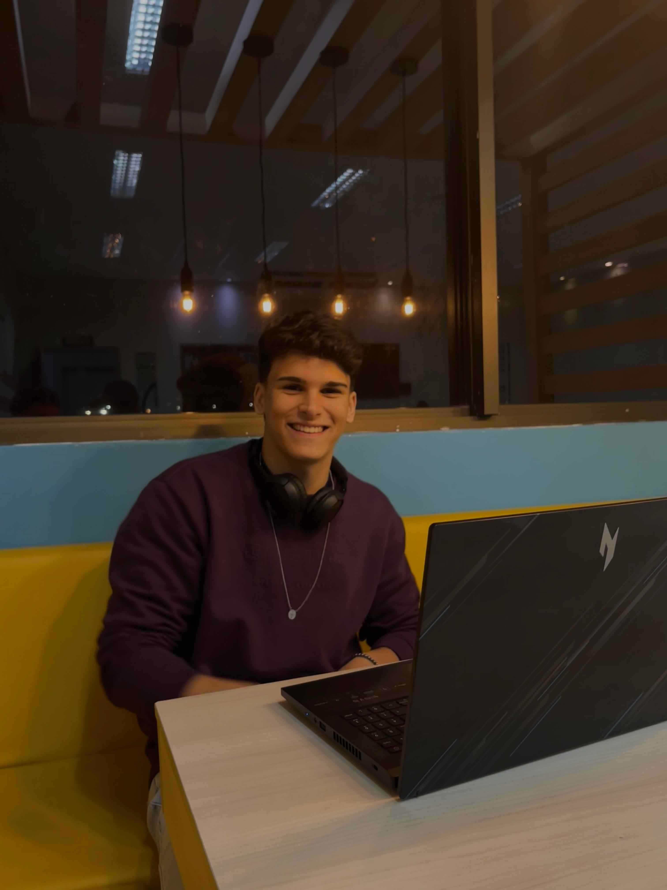

Georgio de Azevedo Oliveira Filho
Olá a todos, eu sou Georgio.
Como Desenvolvedor Full Stack aqui na Totoro Tech, minha especialidade é atuar nas duas pontas do desenvolvimento de software. Eu me dedico a construir a fundação robusta e escalável da aplicação usando Java e o ecossistema Spring no backend, garantindo que nossos dados estejam seguros e que nossas APIs sejam rápidas e confiáveis.
Ao mesmo tempo, no frontend, eu trabalho com React para transformar ideias e designs complexos em interfaces de usuário que sejam intuitivas, responsivas e agradáveis de usar.
Minha verdadeira paixão é ser a ponte entre esses dois mundos. Neste projeto, meu foco é garantir que o backend e o frontend se comuniquem perfeitamente, entregando uma solução completa, coesa e que realmente agregue valor ao usuário final. Estou animado para colaborar com a equipe e transformar este desafio em um produto de sucesso!